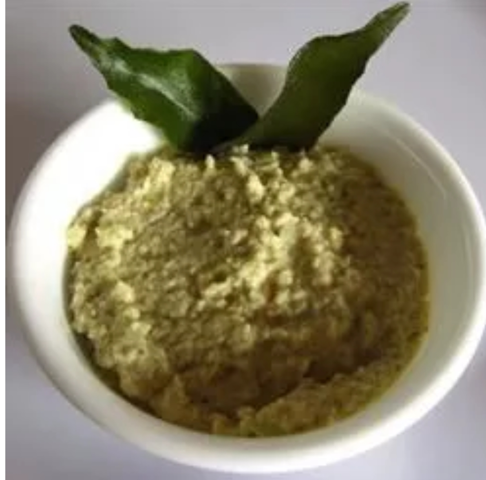

Coconut Chutney

Ingredients
- Coconut
- Green Chillies
- Mustard Seeds
- Water
- Salt
- Cilantro
- Mix the coconut with a small amount of green chillies and pour some water in.
- Blend until it reaches the smooth consistency.
- Add some salt and top it with some mustard seeds and cilantro.
- Enjoy with dosa or idli!